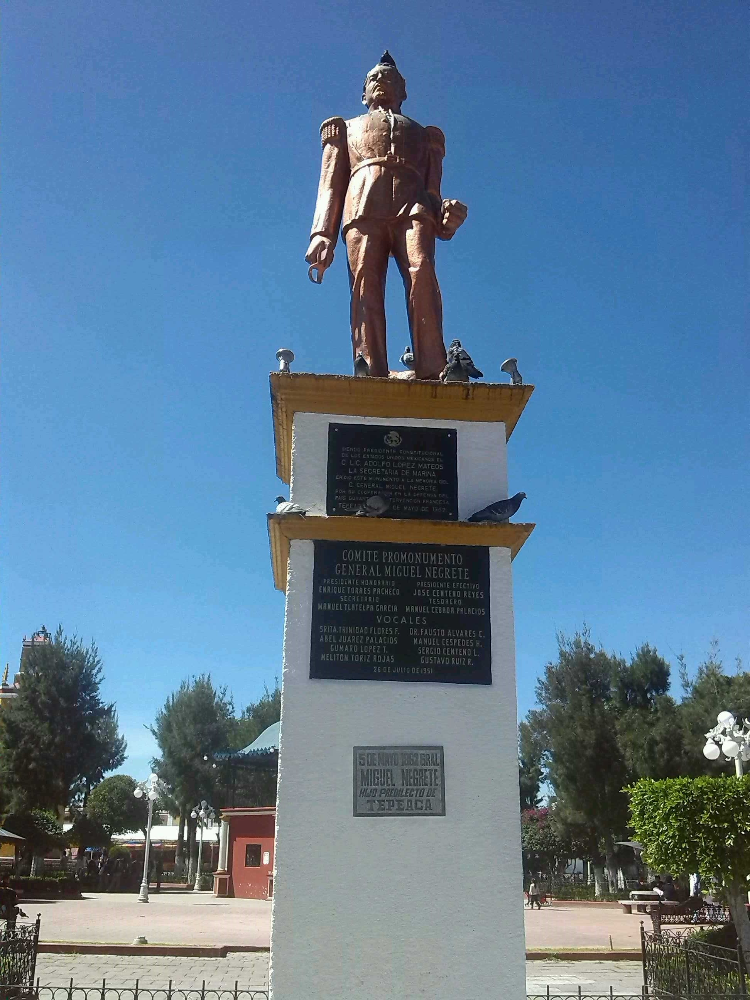

Historia de la batalla 5 de mayo
La Batalla de Puebla figura como una de las fechas patrias más importantes de nuestra historia, debido a que es una de las pocas victorias ante una potencia.
Enmarcada en la segunda intervención francesa, la Batalla de Puebla enfrentó al ejército invasor con el comandado por el general Ignacio Zaragoza. Una lucha entre una fuerza imperial compuesta de seis mil 48 efectivos, bien equipada y entrenada, contra un ejército de cuatro mil 700 combatientes, en su mayoría veteranos, más la ayuda de algunos civiles armados.
La escaramuza comenzó el cinco de mayo de 1862, y se prolongó durante cinco años más. Este conflicto armado tiene su origen a su vez en otra disputa, la Guerra de Reforma, librada por conservadores y liberales, éstos últimos liderados por Benito Juárez, quienes lograron sobreponerse y llegar a la presidencia. Ya en el poder, se instauran las Leyes de Reforma, que incluían la separación de la Iglesia y el Estado, la nacionalización de los bienes eclesiásticos y la libertad de cultos.

Más información
Motivos del inico de la batalla
La escaramuza comenzó el cinco de mayo de 1862, y se prolongó durante cinco años más. Este conflicto armado tiene su origen a su vez en otra disputa, la Guerra de Reforma, librada por conservadores y liberales, éstos últimos liderados por Benito Juárez, quienes lograron sobreponerse y llegar a la presidencia. Ya en el poder, se instauran las Leyes de Reforma, que incluían la separación de la Iglesia y el Estado, la nacionalización de los bienes eclesiásticos y la libertad de cultos.

Museos o monumentos de la batalla
•Museo Interactivo de la Batalla del 5 de Mayo

•Museo de la Revolución, el hogar de los hermanos Serdán
• Monumento Miguel Negrete

•Monumento 5 de Mayo


 1
1 2
2 3
3 5
5 6
6 8
8